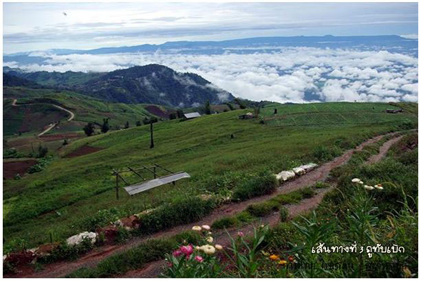

 |
| อันดับ 1 : ภูทับเบิก เพชรบูรณ์
"ภู ทับเบิก” แหล่งท่องเที่ยวใหม่ที่เลื่องชื่อถึงความสวยงาม และมีอากาศหนาวเย็นตลอดทั้งปี ยอดเขาที่มีระดับความสูง ประมาณ 1,768 เมตร จากระดับน้ำทะเล ของภูทับเบิกได้กลายเป็นแหล่งท่องเที่ยวทางธรรมชาติ ผสมกับทางวัฒนธรรมชีวิตชนเผ่าชาวม้งที่ตั้งรกรากบนภูแห่งนี้มาในช่วงสงคราม ทางการเมือง อยู่บนเทือกเขาภูหินร่องกล้าการเดินทางมาท่องเที่ยวภูทับเบิกแล้ว ก็ต้องแวะเข้าไปเที่ยวภูหินร่องกล้า เพราะเป็นพื้นที่เดียวกัน มีแหล่งท่องเที่ยวที่น่าสนใจอย่างเช่น ลานหินปุ่ม ผาชูธง โรงเรียนการเมือง ลานหินแตก น้ำตกร่มเกล้าภราดร และในส่วนของภูทับเบิกก็มีแหล่งชมวิวจุดสูงสุดของจังหวัดเพชรบูรณ์ที่ภูทับ เบิก ชมทะเลหมอก พระอาทิตย์ขึ้นได้อย่างสวยงาม ในช่วงหน้าหนาวจะได้ชมป่านางพญาเสือโคร่ง หรือซากุระเมืองไทย นอกจากนี้ยังมีไร่กะหล่ำให้ได้ชมตลอดทั้งปี |